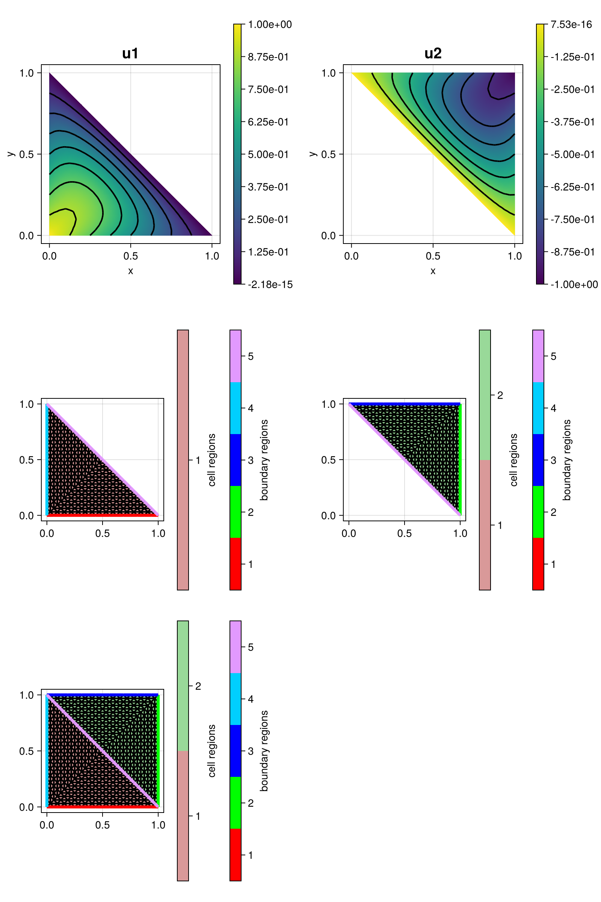

206 : CoupledSubGridProblems
This example demonstrates how to solve a coupled problem where two variables only live on a sub-domain and are coupled through an interface condition. Consider the unit square domain cut in half through on of its diagonals. On each subdomain a solutiong $u_j$ of the two-dimensional Poisson problem
\[\begin{aligned} -\Delta u & = f \quad \text{in } \Omega \end{aligned}\]
with inhomogeneous boundary conditions on the former boundaries of the full square is searched. Along the common boundary between the two subdomains a new interface region is assigned (appended to BFaceNodes) and an interface condition is assembled that couples the two solutions $u_1$ and $u_2$ to each other. In this toy example, this interface conditions penalizes the jump between the two solutions on each side of the diagonal. Oberserve, that if the penalization factor $\tau$ is large, the two solutions are almost equal along the interface.
The computed solution(s) looks like this:

Each column of the plot shows the solution, the subgrid it lives on. The last row shows the full grid.
module Example206_CoupledSubGridProblems
using ExtendableFEM
using ExtendableGrids
using Test #
function boundary_conditions!(result, qpinfo)
result[1] = 1 - qpinfo.x[1] - qpinfo.x[2] # used for both subsolutions
return nothing
end
function interface_condition!(result, u, qpinfo)
result[1] = u[1] - u[2]
result[2] = -result[1]
return nothing
end
function interface_condition_LM!(result, u, qpinfo)
result[1] = (u[1] - u[2])
return nothing
end
function main(; μ = [1.0, 1.0], f = [10, -10], τ = 1, use_LM = true, nref = 4, order = 2, Plotter = nothing, kwargs...)
# Finite element type
FEType = H1Pk{1, 2, order}
FETypeLM = H1Pk{1, 1, order}
# generate mesh
xgrid = grid_unitsquare(Triangle2D)
# define regions
xgrid[CellRegions] = Int32[1, 2, 2, 1]
# add an interface between region 1 and 2
# (one can use the BFace storages for that)
xgrid[BFaceNodes] = Int32[xgrid[BFaceNodes] [2 5; 5 4]]
append!(xgrid[BFaceRegions], [5, 5])
xgrid[FaceRegions][xgrid[BFaceFaces][(end - 1):end]] .= 5
xgrid[BFaceGeometries] = VectorOfConstants{ElementGeometries, Int}(Edge1D, 6)
# refine
xgrid = uniform_refine(xgrid, nref)
# define an FESpace just on region 1 and one just on region 2
FES1 = FESpace{FEType}(xgrid; regions = [1])
FES2 = FESpace{FEType}(xgrid; regions = [2])
if use_LM
FES3 = FESpace{FETypeLM, ON_FACES}(xgrid; regions = [5])
@show FES3.xgrid FES3.dofgrid
end
# define variables
u1 = Unknown("u1"; name = "potential in region 1")
u2 = Unknown("u2"; name = "potential in region 2")
p = Unknown("p"; name = "LM for interface condition")
# problem description
PD = ProblemDescription()
assign_unknown!(PD, u1)
assign_unknown!(PD, u2)
assign_operator!(PD, BilinearOperator([grad(u1)]; regions = [1], factor = μ[1], kwargs...))
assign_operator!(PD, BilinearOperator([grad(u2)]; regions = [2], factor = μ[2], kwargs...))
assign_operator!(PD, LinearOperator([id(u1)]; regions = [1], factor = f[1]))
assign_operator!(PD, LinearOperator([id(u2)]; regions = [2], factor = f[2]))
if use_LM
assign_unknown!(PD, p)
assign_operator!(PD, BilinearOperator(interface_condition_LM!, [id(p)], [id(u1), id(u2)]; regions = [5], transposed_copy = 1, entities = ON_FACES, kwargs...))
else
assign_operator!(PD, BilinearOperator(interface_condition!, [id(u1), id(u2)]; regions = [5], factor = τ, entities = ON_FACES, kwargs...))
end
assign_operator!(PD, InterpolateBoundaryData(u1, boundary_conditions!; regions = 1:4))
assign_operator!(PD, InterpolateBoundaryData(u2, boundary_conditions!; regions = 1:4))
sol = solve(PD, use_LM ? [FES1, FES2, FES3] : [FES1, FES2])
plt = plot([id(u1), id(u2), dofgrid(u1), dofgrid(u2), grid(u1)], sol; Plotter = Plotter)
return sol, plt
end
end #moduleThis page was generated using Literate.jl.